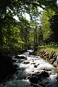

stream
phenomenon

Source: Wikipedia
Wikipedia Page (Something wrong with this association? Let us know.)
Wikidata Page (Something wrong with this association? Let us know.)
Occurs in:
- aquifer~left_stream_channel_reach_water_baseflow__volume_flux
- aquifer~right_stream_channel_reach_water_baseflow__volume_flux
- river_channel_bed_stream_channel_reach_water_leakage__volume_flux
- stream_channel_reach_water~incoming__lateral_component_of_volume_flux
- stream_channel_reach_water~outgoing__lateral_component_of_volume_flux
- land_surface_terrain~left_stream_channel_reach_water__volume_flux
- land_surface_terrain~right_stream_channel_reach_water__volume_flux
- stream_channel_water_flowing__duration_index